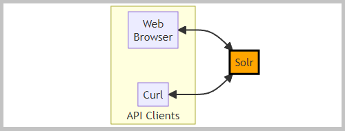
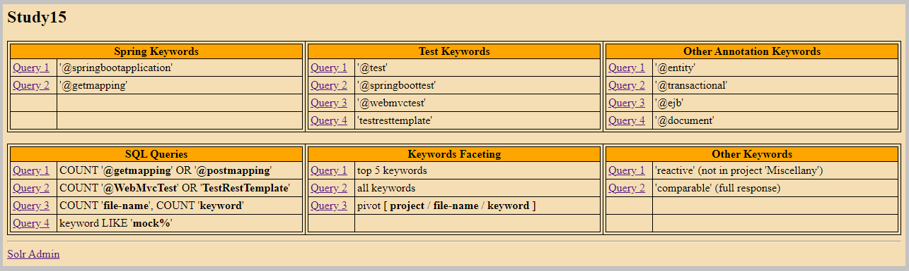

 The flowchart with Solr.
The flowchart with Solr.
The sections of this project:
Java source code:

 kp
kp
Action:

 1. With the batch file
"01 MVN clean install run.bat" start the
'Application'.
1. With the batch file
"01 MVN clean install run.bat" start the
'Application'.
2. With the batch file
"02 Start Solr.bat" start the Solr.
3. With the batch file
"03 CURL recreate collection.bat" recreate the collection.
 1.1. The 'Application'
creates in the directory 'solr-requests'
the big file 'dataset.json' (about 800 KB).
1.1. The 'Application'
creates in the directory 'solr-requests'
the big file 'dataset.json' (about 800 KB).
The selected files from 'Projects' are read in the method 'KeywordsCollector::readFile'.
The files are filtered with the 'Keywords'.
1.2. The screenshot of the console log for the batch file
"03 CURL recreate collection.bat".
The collection is created with the file
'create-collection.json'.
The schema is created with the file
'create-schema.json'.
The Solr index update adds multiple JSON documents from the 'dataset.json' file.
1.3. The screenshot of the 'kp_study' collection showed in the
'Solr Administrator Console'.
Back to the top of the page
1. Run in the web browser the file '0_batch/Links.html'.
The page 'Links': HTML code, HTML preview

The screenshot of the page 'Links'.
2.1.1. The links group 'Spring Keywords', the query '@springbootapplication'.
The query results screenshot.
2.1.2. The links group 'Spring Keywords', the query '@getmapping'.
The query results screenshot.
2.2.1. The links group 'Test Keywords', the query '@test'.
The query results screenshot.
2.2.2. The links group 'Test Keywords', the query '@springboottest'.
The query results screenshot.
2.2.3. The links group 'Test Keywords', the query '@webmvctest'.
The query results screenshot.
2.2.4. The links group 'Test Keywords', the query 'testresttemplate'.
The query results screenshot.
2.3.1. The links group 'Other Annotation Keywords', the query '@entity'.
The query results screenshot.
2.3.2. The links group 'Other Annotation Keywords', the query '@transactional'.
The query results screenshot.
2.3.3. The links group 'Other Annotation Keywords', the query '@ejb'.
The query results screenshot.
2.3.4. The links group 'Other Annotation Keywords', the query '@document'.
The query results screenshot.
2.4.1. The links group 'SQL Queries', the query "COUNT '@getmapping' OR '@postmapping'".
The SQL query:
SELECT DISTINCT project, keyword, COUNT(*) records
FROM kp_study
WHERE `file-extension` = 'java' AND keyword IN('@getmapping','@postmapping')
GROUP BY project, keyword ORDER BY project, keyword
The query results screenshot.
2.4.2. The links group 'SQL Queries', the query "COUNT '@WebMvcTest' OR 'TestRestTemplate'".
The SQL query:
SELECT DISTINCT project, keyword, COUNT(*) records
FROM kp_study
WHERE `file-extension` = 'java' AND keyword IN('@webmvctest','testresttemplate')
GROUP BY project, keyword ORDER BY project, keyword
The query results screenshot.
2.4.3. The links group 'SQL Queries', the query "COUNT 'file-name', COUNT 'keyword'".
The SQL query:
SELECT project, COUNT(DISTINCT `file-name`) file_name_cnt, COUNT(DISTINCT keyword) keyword_cnt
FROM kp_study
WHERE `file-extension` = 'java'
GROUP BY project ORDER BY project
The query results screenshot.
2.4.4. The links group 'SQL Queries', the query "keyword LIKE 'mock%'".
The SQL query:
SELECT DISTINCT project, `file-name`, keyword
FROM kp_study
WHERE `file-extension` = 'java' AND keyword LIKE 'mock%25'
The query results screenshot.
2.5.1. The links group 'Keywords Faceting', the query 'top 5 keywords'.
The query results screenshot.
2.5.2. The links group 'Keywords Faceting', the query 'all keywords'.
The query results screenshot.
2.5.3. The links group 'Keywords Faceting', the query 'pivot [ project / file-name / keyword ]'.
The query results screenshot.
2.6.1. The links group 'Other Keywords', the query "'reactive' (not in project 'Miscellany')".
The query results screenshot.
2.6.2. The links group 'Other Keywords', the query "'comparable' (full response)".
The query results screenshot.
2.7.1. The SQL query runs in the Solr console
'http://localhost:8983/solr/#/kp_study/sqlquery'.
The SQL query:
SELECT
project Project_Name, COUNT(DISTINCT `file-name`) File_Name_Count, COUNT(DISTINCT keyword) Keyword_Count
FROM kp_study
WHERE `file-extension` = 'java'
GROUP BY project
ORDER BY project
The screenshot of the Solr console with the query results.
Back to the top of the pageAction:
1. With the batch file
"04 CURL query.bat" send queries to Solr.
3.1. The screenshot with the Curl query results.
| Miscellany | ||||
| Study01 | Study02 | Study03 | Study04 | Study05 |
| Study06 | Study07 | Study08 | Study09 | Study10 |
| Study11 | Study12 | Study13 | Study14 | |
| Study17 | Study18 | Study19 | Study20 |
| @component | @controller | @document | @ejb | @entity | @getmapping | @inject | @messagedriven |
| @mockbean | @namedquery | @postmapping | @restcontroller | @springbootapplication | @springboottest | @stateless | @test |
| @transactional | @webmvctest | activemq | angularjs | asynchronous | bayes | camunda | cdi |
| checksum | circuitbreaker | collator | comparable | comparator | completablefuture | credentials | criteriaquery |
| cryptography | curl | cyclicbarrier | database | decrypt | docker | ellipticcurvecryptography | encrypt |
| entitymanager | entitymodel | flux | hateoas | jaxb | jboss | jpa | jquery |
| jsf | kafka | mapstruct | mockito | mockmvc | mongodb | mono | openapi |
| orchestration | patriciatrie | postgresql | reactive | reactivemongorepository | redis | restful | resttemplate |
| securerandom | soap | sonar | sonarqube | spotlight | spring | sslsocket | swagger |
| teeing | testresttemplate | thymeleaf | webclient | webflux | weld | wildfly | zoneddatetime |


{kind=link}
{kind=link}
{kind=link}
{kind=link}
{kind=link}
{kind=link}
{kind=link}
{kind=link}
{kind=link}
{kind=link}
{kind=link}
{kind=link}
{kind=link}
{kind=link}
{kind=link}
{kind=link}
{kind=link}
{kind=link}
{kind=link}
{kind=link}
{kind=link}
{kind=link}
{kind=link}